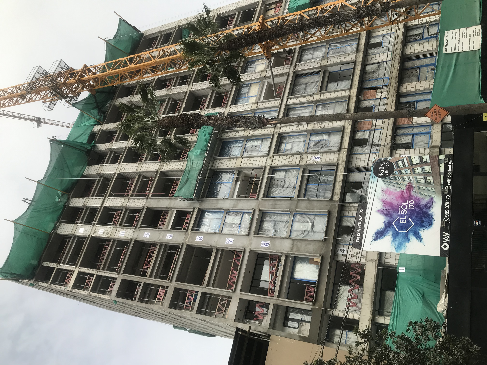
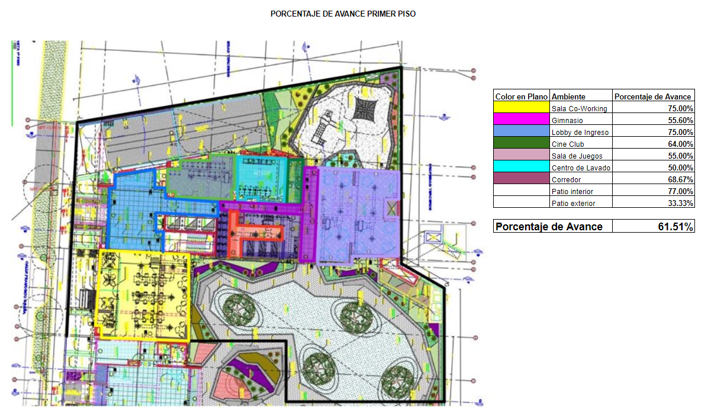

Ingeniero Civil apasionado por la tecnología y la mejora de procesos. Experiencia en la gestión de proyectos con BIM y uso de técnicas de Análitica y Visualización de Datos en las áreas de ingeniería y oficina técnica.
HABILIDADES
60%
80%
80%
90%
PROYECTOS
1/2
📊 Optimización del Cálculo de Desperdicio de Acero en Modelos BIM
En la construcción, las varillas de acero corrugado son elementos longitudinales de sección circular y diámetros diversos. Son utilizadas como elementos
de refuerzo de elementos de concreto armado. Estas siguen criterios normativos que garantizan el correcto compartamiento estructural del elmento,
lo cual deriva en varillas de longitudes y formas específicas, como se muestra en la Figura 1.
Figura 1: Distribución de Acero en Columna
En el sector construcción las varillas son vendidas por peso, comunmente expresado en toneladas y en
longitudes de 9 metros. Esta última condición comercial genera un cantidad desperdiciada al tener cortes de menor longitud.
Lo mencionado es expresado bajo la siguiente ecuación:
\[
\text{Desperdicio} = \left( \frac{\text{Metrado de Pedido (Varillas Comerciales en Kg)}}{\text{Metrado Teórico (Varillas Según Diseño en Kg)}} - 1 \right) \times 100
\]
Actualmente, el sector hace uso de dos forma de cuantificación para los Metrados Teóricos de Acero. Una se basa en un enfoque tradicional
, en el cual se miden longitudes de plano de forma manual y se suman en base a criterios específicos para así, una vez convertidos a unidades de peso,
obtener un Metrado Teórico o de plano. La otra toma un enfoque más innovador y hace uso de modelos digitales, conocidos como modelos de información (BIM),
en los que el acero es modelado en un entorno digital en base a sus propiedades físicas y a su geometría. Si bien este último escenario facilita el cálculo
de la cantidad de acero (Metrado) no brinda directamente un resultado del desperdicio pues no permite un cálculo rápido de la cantidad de cortes en una varilla
comercial.
Por otro lado, en la práctica, los cortes en las varillas de acero comerciales y el uso de piezas sobrantes para reducir el desperdicio, es comunmente resuelto
por la mano de obra encargada del trabajo, es decir maestros de obra y capataces, teniendo en cuenta diversos criterios constructivos. Estos no son el objetivo
principal del proyecto y por tanto, no serán discutidos, mas si tomados en cuenta en el proceso.
Figura 2: Modelo BIM Acero
Objetivos
Crear un flujo que permita calcular el desperdicio de acero a partir de un modelo de información BIM de una edificación de 3 pisos, 1 sótano y cimentación.
Se analizan los siguientes elementos estructurales:
Placas (Muros de Concreto Armado)
Columnas
Vigas
Para lograrlo se toma en cuenta:
La data base será obtenida de un modelo BIM creado en Revit y exportada en formato CSV.
El procesamiento de datos ser hará con python haciendo uso de la libería pandas.
Se definirá una función de agrupamiento que permita unir las longitudes mayores con las longitudes menores, de forma tal que la suma sea la más cercana
a los 9 metros comerciales.
Se asumirá que los aceros podrán ser usados entre los tres elementos.
Abordamiento del Problema
Como punto inicial, es importante establecer la estructura de la data a exportar del modelo BIM. Esto se expresa como
las columnas y el tipo de datos en cada una.
Elemento: Texto / Nombre del elemento, viga, columna, placa, otros.
Tipo: Texto / Código del elemento, código de viga u otro.
Diámetro: Texto / Tamaño de la varilla expresado en unidad de pulgadas fraccionarias. Se toma como texto.
Longitud de barra (m): Número decimal / Longitud de las varillas según diseño o plano expresada en metros.
Peso de acero (kg/m): Número decimal / Propiedad del acero, peso por unidad de longitud en función del diámetro.
De acuerdo al criterio de desperdicio, el agrupamiento debe realizarse por cada Diámetro y en función de las Longitudes de Barra paran obtener la cantidad
de Varillas Comerciales necesarias.
El Elemento, así como el Tipo no serán considerados en el agrupamiento ya que el supuesto base es la utilización de piezas en cualquier elemento estructural.
El Metrado Teórico será tomado a partir de un modelo BIM base, el cual corresponde a una versión sin modificaciones por criterios constructivos, esta será
la línea base para el cálculo del desperdicio. Por otro lado, la cantidad de Varillas Comerciales será calculada a partir de un modelo BIM con modificaciones
por criterios constructivos. Este enfoque permite asegurar que el desperdicio sea un indicador confiable al tomar un punto fijo como comparación.
Resultados
Del agrupamiento realizado, se obtienen desperdicios por diámetro para el proyecto analizado. Estos se expresan en unidades de venta, es decir, kilogramos.
Así se obtiene lo expresado en la Figura 3.
Figura 1: Presentación Avance Físico de Obra
Al crear un flujo de cálculo y contar con una línea base, es posible determinar el impacto en el desperdicio en base a las iteraciones por criterios constructivos
a desarrollar así como a cambios en la ingeniería (Cambio en planos de acero).
📅 Control Gráfico de Avance de Construcción con PowerBI y Speckle
Descripción del Problema
En el sector construcción es indispensable comunicar información entre distintos niveles jerárgicos de los involucrados
de forma eficiente, es decir, comprensible por todos, y con el dinamismo que el propio sector demanda. Esto es aplicable para las
diversas áreas que se desarrollen como parte de un proyecto de construcción. Una de estas áreas es la de planeamiento, concretamente
en el avance de obra.
El avance de obra tiene distintas dimensiones de control, como puede ser en términos económicos, actividades específicas, rescursos empleados
o avance físico. En cualquier caso, el avance físico es importante puesto que da una orientación de qué se ha avanzado o culminado. Comumenmente
las unidades físicas a utilizar pueden ser pisos, habitaciones, torres, columnas, techos, sectores u otros en función de la necesidad del proyecto.

Figura 1: Vista Exterior Obra de Edificación Alta
La claridad de la información suele superarse haciendo de uso de vistas de plano, o imágenes 2D acompañadas de viñetas que ilustran el avance
físico de actividades específicas; sin embargo, este enfoque no logra acoplarse en su totalidad al dinamismo demandado por el sector, pues requiere
un tiempo adicional de procesamiento y preparación, además de requrir ser enviado en múltiples ocasiones por algún medio acordado, como correo electrónico o
nube de almacenamiento. Esta última condición puede generar complicaciones al momento de acceder a la información actualizada, querer realizar una trazabilidad u obtener datos históricos.
Figura 2: Presentación Avance Físico de Obra

Figura 3: Presentación Avance Físico de Obra por Sectores
Actualmente existen herramientas de la metodología BIM que permiten generar visualizaciones más dinámicas y comprensibles para el avance físico de obra;
sin embargo, estas suelen tener el problema de no ser de fácil acceso por todos los involucrados al requerir licencias especiales o cierto dominio de la herramienta
digital.
Objetivos
Vincular la información del modelo BIM de un proyecto, con la información de avance de obra en un reporte en línea haciendo uso de PowerBI y Speckle
Abordamiento del Problema
Se tomará la información de 2 proyectos de edificación de 3 Niveles y un Sótano y 4 Niveles y 1 Sótano, a partir del cual, se trabajará el avance gráfico por niveles
y en función a la fecha fin.
Para simplificar, los niveles se partirán en solo Verticales (Placas y columnas) y Horizontales (Vigas, losas y escaleras)
Resultados
El resultado se muestra en el reporte de PowerBI. Se tiene una interfaz de fácil uso donde se puede ver por cada semana de obra (relativa al inicio
del proyecto) el avance gráfico programado y el avance gráfico realmente ejecutado.
Del mismo modo, para el proyecto de 4 Niveles, es posible incluir porcentajes de avance y una partición a mayor detalle, la cual corresponde a
los sectores (unidades de producción de acuerdo a metodología Lean Construction) que son la partición de un nivel. Este método es usado comunmente
en construcción al minimizar desperidicios y tener una producción continua; sin embargo, no es objeto de discusión para el presente proyecto.
Mediante estos simples modelos de reporte se logra agilizar la transferencia de información, mejorar el entedimiento de todos los involucrados y tener un indicador confiable.